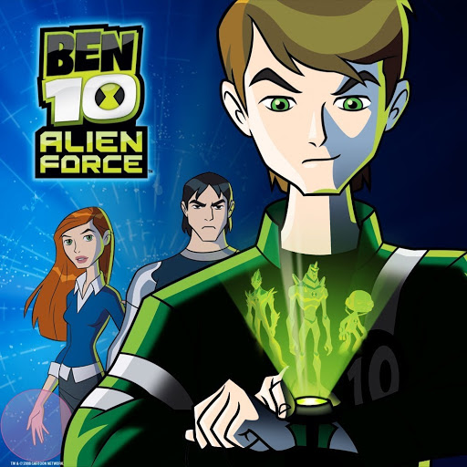
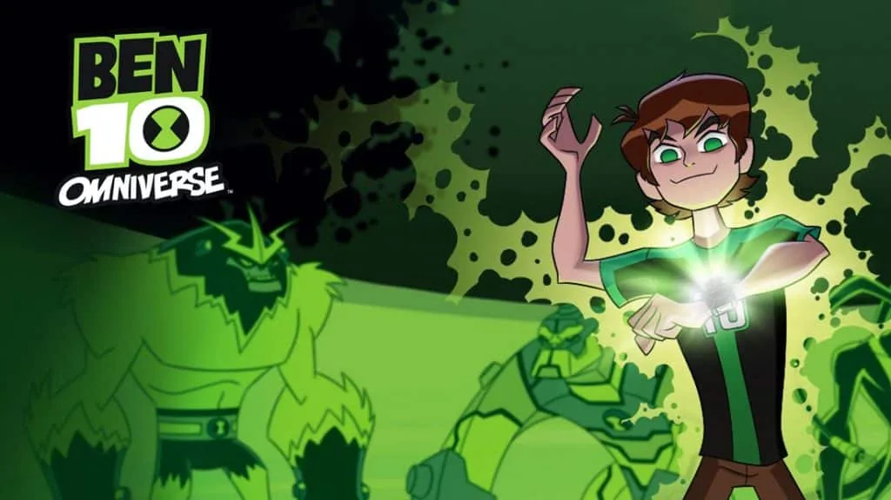
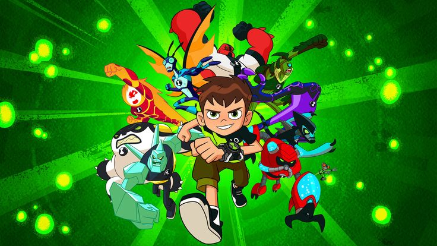

Todas as franquias de Ben 10 em ordem cronológica
Começando em 2005, a franquia Ben 10 já dura quase 2 décadas, com 5 séries de televisão, 5 filmes e dezenas de videogames, histórias em quadrinhos e outros produtos. O programa segue as aventuras de Ben Tennyson, um menino que ganha um relógio que permite que ele se transforme em poderosas espécies alienígenas. Ele viaja pelo mundo, pelo universo e, ocasionalmente, pelas linhas do tempo, tudo em sua busca para deter o mal.
Ben 10 (2005-2008)

A série original Ben 10, lançada em 2005 pelo estúdio Cartoon Network Studios, marcou o início de uma das franquias de animação mais populares e duradouras da TV. A trama acompanha Ben Tennyson, um garoto de 10 anos comum que, durante uma viagem de férias pelo país com sua prima Gwen e seu avô Max, encontra um misterioso dispositivo alienígena chamado Omnitrix. Esse relógio se prende ao seu pulso e concede a Ben o poder de se transformar em dez diferentes formas alienígenas, cada uma com habilidades únicas — como o Chama, com controle sobre o fogo, e o Quatro-Braços, conhecido por sua força sobre-humana.
Ao longo da jornada, Ben usa o Omnitrix para enfrentar vilões, ajudar pessoas e proteger a Terra de ameaças intergalácticas, enquanto aprende sobre responsabilidade, coragem e trabalho em equipe. Sua prima Gwen contribui com sua inteligência e talento para magia, e o avô Max, um ex-encanador interestelar (membro de uma organização secreta de defesa galáctica), oferece experiência, tecnologia e orientação.
A série mistura aventura, humor e ficção científica, apresentando um universo cada vez mais rico, com alienígenas de diferentes planetas, mistérios sobre a origem do Omnitrix e o surgimento de inimigos icônicos como Vilgax, Kevin 11 e Charmcaster.
Com o passar das temporadas, Ben descobre novas transformações e enfrenta desafios cada vez mais grandes, consolidando seu papel como herói. No total, a série original teve quatro temporadas e 49 episódios, sendo amplamente elogiada por sua criatividade, desenvolvimento de personagens e trilha sonora marcante.
O sucesso foi tão grande que Ben 10 se expandiu em várias continuações e reboots, incluindo Ben 10: Alien Force, Ben 10: Ultimate Alien, Ben 10: Omniverse e o reboot de 2016, além de filmes animados e produtos licenciados. Essa primeira série não apenas apresentou o universo de Ben Tennyson, mas também definiu o estilo e a essência da franquia, tornando-se um marco na animação moderna e um símbolo nostálgico para toda uma geração.
Ben 10: Força Alienígena (2008-2010)

Com o sucesso da série original, é óbvio que Ben 10 se tornaria uma franquia. Assim tivemos Ben 10: Força Alienígena, que se passava 5 anos após os eventos da série original e que contou com 46 episódios divididos em 3 temporadas.
agora adolescentes Ben e Gwen retornam à ação após o desaparecimento do vô Max. Juntando-se a eles está o vilão que virou herói da série original, Kevin Levin, um híbrido de humano e osmosiano que pode absorver qualquer tipo de energia e liberá-la à vontade.
A série reintroduziu o Omnitrix em uma forma atualizada e apresentou 10 novos alienígenas, incluindo Fogo Fátuo e Enormossauro. Ben 10: Força Alienígena também introduziu uma espécie alienígena genocida chamada Soberanos, que procurou expurgar todas as outras formas de vida, e também os Encanadores, que ajudaram Ben a parar os Soberanos.
Ben 10: Supremacia Alienígena (2010-2012)

Ben 10: Supremacia Alienígena é a terceira série da franquia e também continuação direta de suas antecessoras. A série estreou originalmente logo após o fim de sua antecessora, em 23 de abril de 2010. A princípio se chamaria Ben 10: Evolution, mas logo teve seu título alterado para a versão atual.
Logo no início da trama, Ben tem seu relógio, o Omnitrix, destruído, entretanto consegue um substituto novo e melhorado: o Ultimatrix. Mas, com vovô Max, Gwen e Kevin ao seu lado, o nosso herói continua salvando o dia e combatendo vilões da Terra e de fora dela. Além disso, com o novo relógio, Ben consegue não apena se transformar, como também evoluir os alienígenas.
Supremacia Alienígena teve um total de 52 episódios, divididos em 3 temporadas. Além disso, a série teve um jogo de videogame derivado, chamado “Ben 10 Ultimate Alien: Cosmic Destruction”.
Ben 10: Omniverse (2012-2014)

Quando Gwen e Kevin partem para a faculdade, Ben embarca em suas próprias aventuras ao lado de seu parceiro encanador em treinamento, Rook Blonko. Isso dá uma ar quase que de série policial, com a dupla enfrentando o crime e as más influências em uma cidade alienígena secreta conhecida como Cidade de Baixo.
Omniverse inclui duas versões de Ben, pois se divida em dois períodos. No passado tínhamos o Ben de 11 anos, enquanto que no presente tínhamos o Ben de 16 anos, cada uma com histórias divididas alternadas.
Ben 10: Omniverse marca a primeira mudança visual mais drástica da série, embora ainda se passe em um mesmo universo e os eventos das séries anteriores ainda estejam valendo. Essa série teve 80 episódios, dividos em 8 temporadas de 10.
Ben 10 Reboot (2016-2021)

Em 2016, Ben 10 ganhou uma nova série animada, mas agora como um reboot total. A estética muito mais infantilizada não agradou os fãs, que a consideram "a queda" de Ben 10. Essa era uma tendência do Cartoon na época, com obras como Jovens Titãs Em Ação, Thundercats Roar, e Que Legal Scooby Doo!
Esse reboot redefiniu a ideia da série original, onde Ben, Gwen e Vô Max viajam pela América. Muitos aspectos de todas as quatro temporadas anteriores foram retrabalhados no reboot, incluindo vários Aliens que só apareceram em temporadas posteriores. Além de incluir mais alienígenas, os anteriores também receberam novas formas graças a armaduras, melhorias e fusões.
O final do reboot reúne todos os Bens do passado da linha do tempo clássica para enfrentar um vilão que salta por dimensões. Esta série apresentou crossovers com vários programas do Cartoon Network na forma de um evento de crossover chamado Crossover Nexus, no qual o Omnitrix de Ben permite que ele se transforme em dezenas de personagens do Cartoon Network, incluindo Finn de Hora de Aventura, e Gumball Watterson de O Incrível Mundo de Gumball.